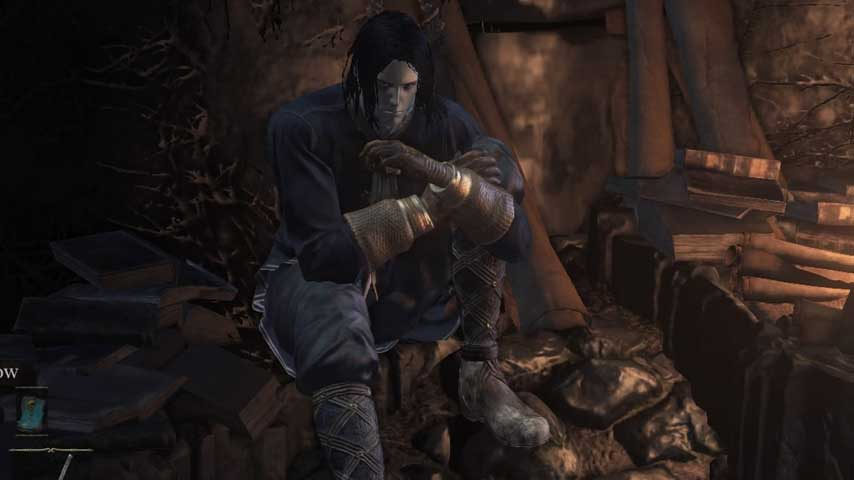
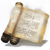

Sorcery
Sorcery Overview
Sorcery is the art of harnessing the magical power of souls and unleashing it against your foes. Most spells in the Sorcery school are offensive, ranging from projectiles to close range soul swords. There are a few utility spells in Sorcery, however they are only effective in niche scenarios.

Scaling

Sorceries deal more damage the more points you have invested in the Intelligence stat. Sorceries will also have a required level of Intelligence in order to be able to cast them. Generally, stronger spells require a higher level of Intelligence in order to cast.
Casting Equipment
A Staff is required to cast Sorceries. The Assassin and the Sorcerer both start with staves, and other staves can be found throughout the world of Lothric. If you use the weapon art of a Staff, your Sorceries will temporarily inflict more damage. Staves can be upgraded at Andre the Blacksmith, just like a regular weapon.

Orbeck of Vinheim
Orbeck is an NPC that can be found in the near the Crucifixion Woods bonfire in the Road of Sacrifices area. If you talk to him and accept his proposal, he will teleport to Firelink Shrine. You must have at least 10 Intelligence for him to teleport to Firelink Shrine. From there you can talk to him again and buy new Sorceries. However if you don't bring him any Sorcery Scrolls before you fight the Abyss Watchers, he will leave your game permanently.
Sorcery Scrolls
Keep your eyes peeled for Sorcery Scrolls. These key items can be brought to Orbeck in Firelink Shrine (if you've found him already), and he will then have new and more powerful Sorceries for you to buy. Be sure to bring Orbeck at least one Sorcery Scroll before you fight the Abyss Watchers, or else he will leave Firelink Shrine forever.
